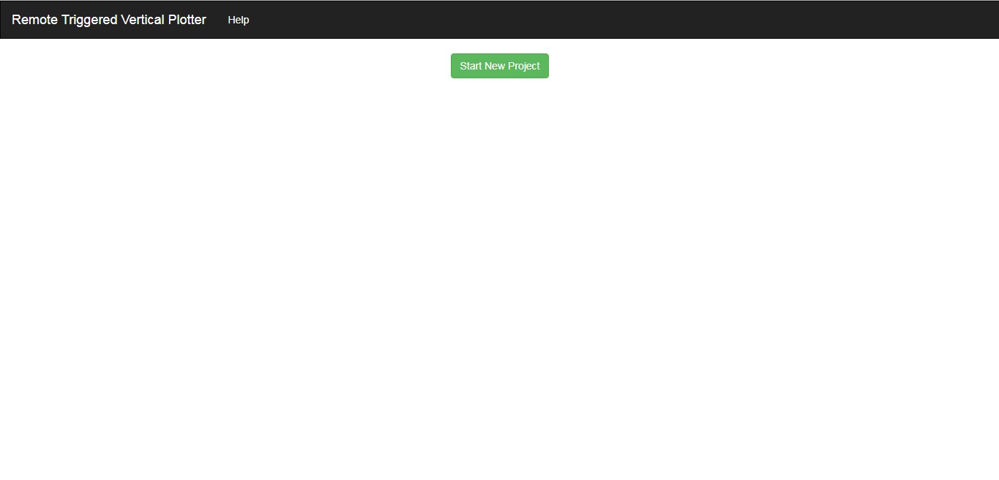

Running our application¶
1.0. Starting the flask server¶
Now that we have the setup & dependencies up and running, we are ready to work with our web application.
Let’s export our flask app:
(YOUR_VIRTUAL_ENVIRONMENT_NAME)
Ashwin Shenoy at Ashwin_Shenoy ~
$ export FLASK_APP=plotter.py
On a linux machine, it’s simply set FLASK_APP=plotter.py
Once that’s done, we run our flask application:
(YOUR_VIRTUAL_ENVIRONMENT_NAME)
Ashwin Shenoy at Ashwin_Shenoy ~
$ run flask
After some time, the application should be hosted on port 5000. Going to http://127.0.0.1:5000/, we should see the following:
Fig 1 : Starting a new project.
2.0. Starting a new project¶
Click on Start New Project which will lead you to the canvas configuration page:
Fig 2 : Canvas setup page.
Here, we have the following input fields:
Project Name: It can be any thing you desire
2. Select Scale : We provide you with 3 options. You can select as per your convenience, depending upon
your canvas dimensions.
- Inch
- Foot
- Meter
Width: The width of the canvas in the chosen unit.Height: The height of the canvas in chosen unit.Distance between mounting points: The distance between the 2 points from which the bot is suspended.Vertical distance to origin: The vertical distance between the bot & the origin.